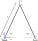

Static Von-Mises Truss example
In this example the Static Von Mises Truss problem and its resolution using ONSAS are described. The aim of this example is to verify the implementations of the Newton-Raphson and Newton-Raphson-Arc-Length methods by comparing the results provided with the analytic solutions.
The structural model is formed by two truss elements with length $L$ as it is shown in the figure, with nodes $1$ and $3$ fixed, and node $2$ submitted to a nodal load $P$ and constrained to move only in the $x-z$ plane.
Analytic solutions
The solutions for the nonlinear cases are developed in section 2.3 of (Bazzano and Pérez Zerpa, 2017). The expressions obtained for different strain measures are:
- Rotated-Engineering: $P = \dfrac{EA_o(z_2+w)\left(\sqrt{(w+z_2)^2+x_2^2}-l_o\right)}{l_o\sqrt{(w+z_2)^2+x_2^2}}$
- SVK: $P = \dfrac{EA_o (z_2+w)\left( 2 z_2 w + w^2 \right) }{ 2 l_o^3 }$
where $x_2$ and $z_2$ are the coordinates of node 2 in the reference configuration and $w$ is the vertical displacement in the $z$ direction.
Numerical solutions
Before defining the structs, the workspace is cleared, the ONSAS directory is added to the path
close all;
clear all;
addpath(genpath([pwd '/../../src']));First some scalar parameters are defined and computed
E = 210e9;
nu = 0;
A = 2.5e-3;
ang1 = 65;
L = 2;
x2 = cos(ang1 * pi / 180) * L;
z2 = sin(ang1 * pi / 180) * L;MEB parameters
The modelling of the structure begins with the definition of the Material-Element-BoundaryConditions (MEB) parameters.
materials
The materials struct is initialized as empty.
materials = struct();Since for each model both bars are formed by the same material only one materials struct is defined. The constitutive behavior considered in the first analysis case is an elastic behavior for the Rotated Engineering strain, then:
materials.modelName = 'elastic-rotEngStr';and in the field modelParams a vector with the parameters of the Engineering Strain model is set
materials.modelParams = [E nu];which in the case of this material model are the Young modulus and the Poisson ratio. The field density is not set, then the default $\rho = 0$ value is considered by ONSAS.
elements
The elements struct is initialized as empty
elements = struct();Two different types of elements are required to create the model: node and truss, thus, the elements struct will have two entries. The type of the first entry is
elements(1).elemType = 'node';and the second entry is
elements(2).elemType = 'truss';for the geometries, the node has no geometry to assign, and the truss elements will be set as the native circle cross-section, then the elemCrossSecParams field is:
elements(2).elemCrossSecParams = { 'circle', sqrt(A * 4 / pi) };boundaryConds
The elements are submitted to two different BoundaryConditions, then the struct boundaryConds will have length two. The nodes $1$ and $3$ are fixed, without loads applied (this is the first BC), and node $2$ has a constraint in displacement and an applied load (second BC). For the displacements, the first BC corresponds to a xyz-fixed displacement,
boundaryConds = struct();
boundaryConds(1).imposDispDofs = [1 3 5];
boundaryConds(1).imposDispVals = [0 0 0];and the second BC corresponds to a zero displacement only in the $y$ direction.
boundaryConds(2).imposDispDofs = 3;
boundaryConds(2).imposDispVals = 0;Regarding the loads, the second BC is set so that the final load factor is $3 \cdot 10^8$ at 1 second. The default zero density is used, then no inertial effects are considered.
boundaryConds(2).loadsCoordSys = 'global';
boundaryConds(2).loadsTimeFact = @(t) 3.0e8 * t;
boundaryConds(2).loadsBaseVals = [0 0 0 0 -1 0];mesh parameters
The coordinates of the nodes of the mesh are given by the matrix:
mesh = struct();
mesh.nodesCoords = [0 0 0; ...
x2 0 z2; ...
2 * x2 0 0];where the columns 1,2 and 3 correspond to $x$, $y$ and $z$ coordinates, respectively, and the row $i$-th corresponds to the coordinates of node $i$.
The connectivity is introduced using the conecCell cell. Each entry of the cell (indexed using {}) contains a vector with the four indexes of the MEB parameters, followed by the indexes of the nodes of the element (node connectivity). For didactical purposes each element entry is commented. First the cell is initialized:
mesh.conecCell = cell(5, 1);Then the entry of node $1$ is introduced:
mesh.conecCell{ 1, 1 } = [0 1 1 1];the first MEB parameter (Material) is set as zero (since nodes dont have material). The second parameter corresponds to the Element, and a 1 is set since node is the first entry of the elements.elemType cell. For the BC index, we consider that node $1$ is fixed, then the first index of the boundaryConds struct is used. Finally, at the end of the vector the number of the node is included (1). A similar approach is used for node $3$,
mesh.conecCell{ 2, 1 } = [0 1 1 3];and for node $2$ only the boundary condition is changed.
mesh.conecCell{ 3, 1 } = [0 1 2 2];Regarding the truss elements, the first material is considered, the second type of element, and no boundary conditions are applied.
mesh.conecCell{ 4, 1 } = [1 2 0 1 2];
mesh.conecCell{ 5, 1 } = [1 2 0 2 3];initial Conditions
homogeneous initial conditions are considered, then an empty cell is set:
initialConds = struct();analysisSettings
The method used in the analysis is the Newton-Raphson, then the field methodName must be introduced as:
analysisSettings = {};
analysisSettings.methodName = 'newtonRaphson';and the following parameters correspond to the iterative numerical analysis settings
analysisSettings.deltaT = 0.1;
analysisSettings.finalTime = 1;
analysisSettings.stopTolDeltau = 1e-9;
analysisSettings.stopTolForces = 1e-9;
analysisSettings.stopTolIts = 15;otherParams
otherParams = struct();
otherParams.problemName = 'staticVonMisesTruss_NR_RotEng';
otherParams.plots_format = 'vtk';
otherParams.plots_deltaTs_separation = 2;Analysis case 1: Newton-Raphson with Rotated Eng Strain
In the first case ONSAS is run and the solution at the dof of interest is stored.
[modelCurrSol, modelProperties, BCsData] = initONSAS(materials, elements, boundaryConds, initialConds, mesh, analysisSettings, otherParams);After that the structs are used to perform the numerical time analysis
[matUs, loadFactorsMat, solutions] = solveONSAS(modelCurrSol, modelProperties, BCsData);
controlDispsNREngRot = -matUs(11, :);
loadFactorsNREngRot = loadFactorsMat(:, 2);Analysis case 2: Newton-Raphson with linear elastic behavior
In this case a linear elastic behavior is assumed. Then the material modelName is overwritten
materials.modelName = 'elastic-linear';
otherParams.problemName = 'staticVonMisesTruss_elastic-linear';
analysisSettings.finalTime = 1.5;and the analysis is run again
[modelCurrSol, modelProperties, BCsData] = initONSAS(materials, elements, boundaryConds, initialConds, mesh, analysisSettings, otherParams);After that the structs are used to perform the numerical time analysis
[matUs, loadFactorsMat, solutions] = solveONSAS(modelCurrSol, modelProperties, BCsData);the displacements are extracted
controlDispsNRlinearElastic = -matUs(11, :);
loadFactorsNRlinearElastic = loadFactorsMat(:, 2);and the analytic values of the load factor are computed, as well as its difference with the numerical solution
analyticLoadFactorsNREngRot = @(w) -2 * E * A * ...
(((z2 + (-w)).^2 + x2^2 - L^2) ./ (L * (L + sqrt((z2 + (-w)).^2 + x2^2)))) .* ...
(z2 + (-w)) ./ (sqrt((z2 + (-w)).^2 + x2^2));
difLoadEngRot = analyticLoadFactorsNREngRot(controlDispsNREngRot)' - loadFactorsNREngRot;Analysis case 3: NR with Green Strain
In order to perform a SVK case analysis, the material is changed and the problemName is also updated
elements(2).elemCrossSecParams = { 'generic', [A 1 1 1] };
otherParams.problemName = 'staticVonMisesTruss_NR_Green';
materials.modelName = 'elastic-SVK';
analysisSettings.finalTime = 1.0;
lambda = E * nu / ((1 + nu) * (1 - 2 * nu));
mu = E / (2 * (1 + nu));
materials.modelParams = [lambda mu];the load history is also changed
boundaryConds(2).loadsTimeFact = @(t) 1.5e8 * t;and the analysis is run
[modelCurrSol, modelProperties, BCsData] = initONSAS(materials, elements, boundaryConds, initialConds, mesh, analysisSettings, otherParams);After that the structs are used to perform the numerical time analysis
[matUs, loadFactorsMat, solutions] = solveONSAS(modelCurrSol, modelProperties, BCsData);and the displacements are extracted
controlDispsNRGreen = -matUs(11, :);
loadFactorsNRGreen = loadFactorsMat(:, 2);the analytic solution is computed
analyticLoadFactorsGreen = @(w) -2 * E * A * ((z2 + (-w)) .* (2 * z2 * (-w) + w.^2)) ./ (2.0 * L^3);
difLoadGreen = analyticLoadFactorsGreen(controlDispsNRGreen)' - loadFactorsNRGreen;Analysis case 4: NR-AL with Green Strain
In this case the rectangle section is considered (with the same area as the previous cases) and the Arc-Length resolution method is used.
otherParams.problemName = 'staticVonMisesTruss_NRAL_Green';the section is changed
elements(2).elemCrossSecParams{1, 1} = 'rectangle';
elements(2).elemCrossSecParams{2, 1} = [sqrt(A) sqrt(A)];the numerical method is changed
analysisSettings.methodName = 'arcLength';
analysisSettings.finalTime = 1;a varying step of displacements is considered
analysisSettings.incremArcLen = [0.15 * ones(1, 8) 0.3 * ones(1, 2)];
analysisSettings.iniDeltaLamb = boundaryConds(2).loadsTimeFact(.2) / 100;
analysisSettings.posVariableLoadBC = 2;[modelCurrSol, modelProperties, BCsData] = initONSAS(materials, elements, boundaryConds, initialConds, mesh, analysisSettings, otherParams);After that, the structs are used to perform the numerical time analysis
[matUs, loadFactorsMat, solutions] = solveONSAS(modelCurrSol, modelProperties, BCsData);and the control numerical displacements and loadfactors are extracted
controlDispsNRALGreen = -matUs(11, :);
loadFactorsNRALGreen = loadFactorsMat(:, 2);and compared with analytic solutions.
analyticLoadFactorsNRALGreen = analyticLoadFactorsGreen(controlDispsNRALGreen);
difLoadGreenNRAL = analyticLoadFactorsNRALGreen' - loadFactorsNRALGreen;Analysis case 5: NR-AL Jirasek variant
elements(2).elemCrossSecParams = { 'rectangle', [sqrt(A) sqrt(A)] };
otherParams.problemName = 'staticVonMisesTruss_NRAL_Jirasek_Green';
analysisSettings.incremArcLen = 0.15;Sets arcLengthFlag = 2 to secifiy Jirasek constraint method.
analysisSettings.ALdominantDOF = [11 -1];[modelCurrSol, modelProperties, BCsData] = initONSAS(materials, elements, boundaryConds, initialConds, mesh, analysisSettings, otherParams);After that the structs are used to perform the numerical time analysis
[matUs, loadFactorsMat, solutions] = solveONSAS(modelCurrSol, modelProperties, BCsData);
controlDispsNRAL_Jirasek_Green = -matUs(11, :);
loadFactorsNRAL_Jirasek_Green = loadFactorsMat(:, 2);
analyticLoadFactorsNRAL_Jirasek_Green = analyticLoadFactorsGreen(controlDispsNRAL_Jirasek_Green);
difLoadGreenNRAL_Jirasek = analyticLoadFactorsNRAL_Jirasek_Green' - loadFactorsNRAL_Jirasek_Green;Verification
the numerical resolution is validated for both strain measures.
verifBoolean = ((norm(difLoadEngRot) / norm(loadFactorsNREngRot)) < 1e-4) && ...
((norm(difLoadGreen) / norm(loadFactorsNRGreen)) < 1e-4) && ...
((norm(difLoadGreenNRAL) / norm(loadFactorsNRALGreen)) < 1e-4) && ...
((norm(difLoadGreenNRAL_Jirasek) / norm(loadFactorsNRAL_Jirasek_Green)) < 1e-4);Plots
Finally the solutions are plotted.
lw = 2.0;
ms = 11;
plotfontsize = 18;
figure;
plot(controlDispsNREngRot, analyticLoadFactorsNREngRot(controlDispsNREngRot), 'b-x', 'linewidth', lw, 'markersize', ms);
hold on;
grid on;
plot(controlDispsNREngRot, loadFactorsNREngRot, 'k-o', 'linewidth', lw, 'markersize', ms);
plot(controlDispsNRALGreen, analyticLoadFactorsGreen(controlDispsNRALGreen), 'g-x', 'linewidth', lw, 'markersize', ms);
plot(controlDispsNRGreen, loadFactorsNRGreen, 'r-s', 'linewidth', lw, 'markersize', ms);
plot(controlDispsNRALGreen, loadFactorsNRALGreen, 'c-^', 'linewidth', lw, 'markersize', ms);
plot(controlDispsNRAL_Jirasek_Green, loadFactorsNRAL_Jirasek_Green, 'y-*', 'linewidth', lw, 'markersize', ms);
plot(controlDispsNRlinearElastic, loadFactorsNRlinearElastic, 'm-+', 'linewidth', lw, 'markersize', ms);
labx = xlabel('Displacement w(t)');
laby = ylabel('\lambda(t)');
legend('analytic-RotEng', 'NR-RotEng', 'analytic-Green', 'NR-Green', 'NRAL-Green', 'NRAL-Jirasek-Green', 'elastic-linear', 'location', 'northoutside');
set(gca, 'linewidth', 1.0, 'fontsize', plotfontsize);
set(labx, 'FontSize', plotfontsize);
set(laby, 'FontSize', plotfontsize);
print('output/vonMisesTrussCheck.png', '-dpng');